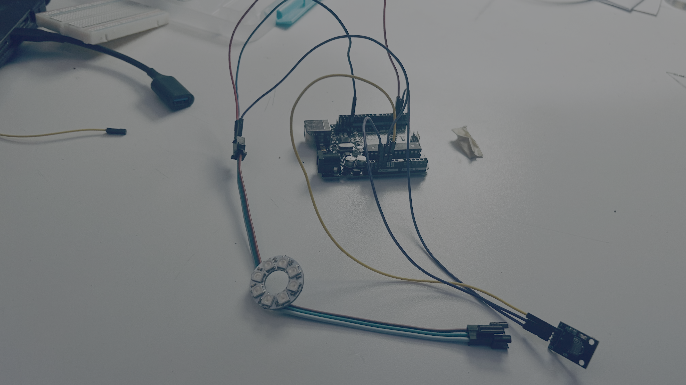
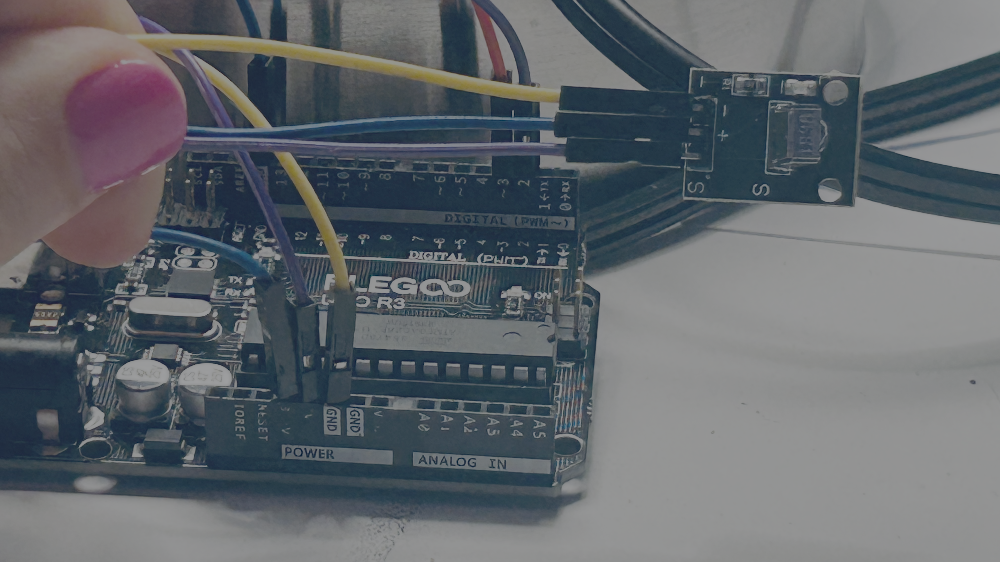
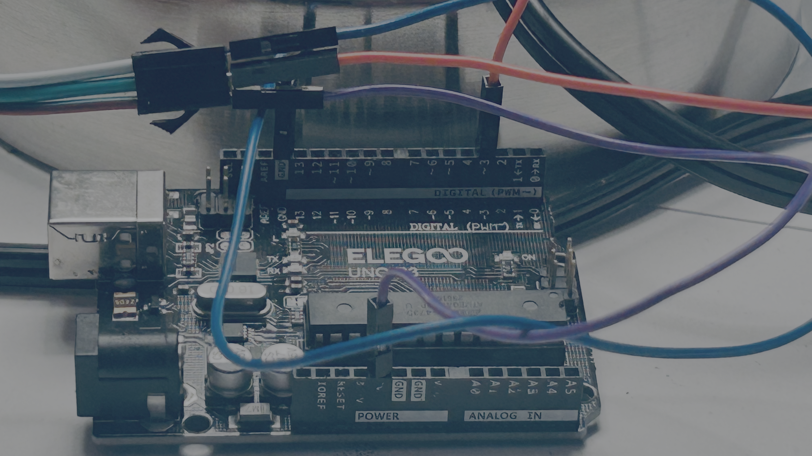

Circuit Hacking Monday: Remote Controlled Light
🛠️ Project
Using IR Remote you will control and LED Light Strip.

| Remote Button | Effect |
|---|---|
| 1 | ❤️ Blinking Red |
| 2 | 🌈 Rotating Rainbow |
| 3 | 🎭 Theater Chase |
| 4 | 🚓 Scanner |
| 5 | ☄️ Comet |
🔌 Wires


| Arduino Pin | Component | Component Pin |
|---|---|---|
| 5V | NeoPixel Ring | 5V |
| GND | NeoPixel Ring | GND |
| 3 | NeoPixel Ring | DIN |
| 3.3v | IR Receiver | VCC |
| GND | IR Receiver | GND |
| 2 | IR Receiver | OUT |
💻 Code
Libraries Used
- IRremote
- FastLED
C++ Code
#include <IRremote.hpp> // Include the IRremote library for infrared communication
#include <FastLED.h>
bool developer_ir_remote_found = false; // whether ir remote was pressed
int developer_ir_remote_command = -1; // the button pressed by the ir remote
#define PIN_DATA 3
#define NUM_LEDS 8
CRGB leds[NUM_LEDS];
uint8_t baseHue = 0;
int scannerPosition = 0;
int scannerDirection = 1;
int mode = 0;
// Initialise the program settings and configurations
void setup() {
IrReceiver.begin(2, true); //
// Set the speed of the stepper motor to defined/given speed in RPM.
FastLED.addLeds<NEOPIXEL, PIN_DATA>(leds, NUM_LEDS);
Serial.begin(115200);
Serial.setTimeout(100);
}
// The void loop function runs over and over again forever.
void loop() {
irRemoteLoopScan(); // Checks for then ir loop scan.
if (developer_ir_remote_found && developer_ir_remote_command > 0) {
Serial.println(developer_ir_remote_command);
mode = developer_ir_remote_command;
}
if (mode == 69) {
blinkRed();
}
if (mode == 70) {
rotatingRainbow();
}
if (mode == 71) {
theaterChase(CRGB::Red);
delay(150);
}
if (mode == 68) {
scanner(CRGB::Blue);
delay(50);
}
if(mode == 64) {
comet(CRGB::Green);
delay(80);
}
delay(10); // stops serial flooding.
}
void rotatingRainbow()
{
fill_rainbow(leds, NUM_LEDS, baseHue, 255 / NUM_LEDS);
FastLED.show();
baseHue += 32; // Rotate the rainbow
delay(30);
}
void theaterChase(CRGB color)
{
static uint8_t offset = 0;
fill_solid(leds, NUM_LEDS, CRGB::Black);
for (int i = offset; i < NUM_LEDS; i += 3)
{
leds[i] = color;
}
FastLED.show();
offset = (offset + 1) % 3;
}
void blinkRed()
{
for (int i = 0; i < NUM_LEDS; ++i) {
leds[i] = CRGB::Red;
}
FastLED.show();
delay(500);
for (int i = 0; i < NUM_LEDS; ++i) {
leds[i] = CRGB::Black;
}
FastLED.show();
delay(500);
}
void scanner(CRGB color)
{
// Fade the previous LEDs to create a trail
fadeToBlackBy(leds, NUM_LEDS, 120);
// Light the current LED
leds[scannerPosition] = color;
FastLED.show();
// Move to the next position
scannerPosition += scannerDirection;
// Reverse direction at either end
if (scannerPosition >= NUM_LEDS - 1)
{
scannerPosition = NUM_LEDS - 1;
scannerDirection = -1;
}
else if (scannerPosition <= 0)
{
scannerPosition = 0;
scannerDirection = 1;
}
}
void comet(CRGB color)
{
static uint8_t pos = 0;
fadeToBlackBy(leds, NUM_LEDS, 60);
leds[pos] = color;
FastLED.show();
pos = (pos + 1) % NUM_LEDS;
}
void irRemoteLoopScan() {
if (!IrReceiver.decode()) {
developer_ir_remote_found = false;
developer_ir_remote_command = -1;
IrReceiver.resume();
return;
}
// Short-circuit noisy/overflow frames
if (IrReceiver.decodedIRData.flags & IRDATA_FLAGS_WAS_OVERFLOW) {
// Too long/garbled signal, skip
IrReceiver.resume();
developer_ir_remote_found = false;
developer_ir_remote_command = -1;
return;
}
// Ignore repeat frames (user holding the button)
if (IrReceiver.decodedIRData.flags & IRDATA_FLAGS_IS_REPEAT) {
IrReceiver.resume();
developer_ir_remote_found = false;
developer_ir_remote_command = -1;
return;
}
developer_ir_remote_found = true;
developer_ir_remote_command = IrReceiver.decodedIRData.command;
IrReceiver.resume();
}